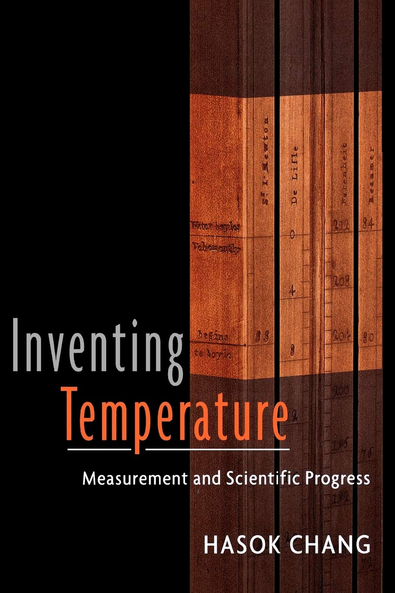
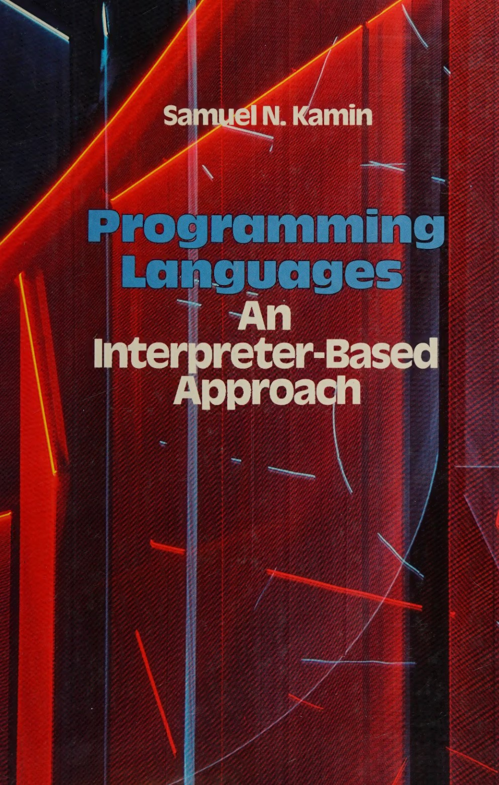
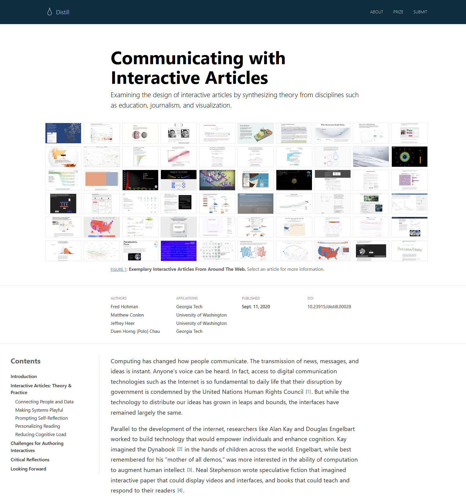

Writing Tiny Programming Systems
Tomas Petricek, Charles University, Prague

What I'm Interested In
Languages and
Type systems
Worked on F# and coeffect systems

Programming Systems
Think about state and interaction!

History of Programming
Recovering
lost ideas

Demo
TinyBoxer from PLISS
Tiny systems

Research device
- You can actually poke things!
- Interactive system concepts
- Reconstruct past ideas
Teaching device
- Explaining core algorithms
- Learning by writing code
- Teach more than just language theory!
Charles University
We have pretty
smart students!
Lots of freedom in
how & what to teach
How can I teach all
the things that I like?
Write your own tiny system(s)!

Course idea
- Implement key parts of language and system algorithms (in F#)
- Focused on hands-on coding
- Guided step-by-step templates
Course structure
- Pre-recorded video with background & F# basics
- 3 hour session every other week
- Complete basic tasks later for credits
Tiny systems covered
- TinyML: Tiny functional language interpreter
- TinyBASIC: Tiny interactive imperative system
- TinyHM: Tiny Hindley-Milner type inference
- TinyProlog: Tiny declarative logic language
- TinySelf: Tiny prototype-based OO language
- TinyExcel: Tiny incremental spreadsheet system
// A term can be either atom (...),
// variable (...), or predicate (...).
type Term =
| Atom of string
| Variable of string
| Predicate of string * Term list
// A clause is for example:
// 'mortal(X) :- human(X)'
// It consists of 'head :- body'
type Clause =
{ Head : Term
Body : Term list }
// A program is a list of clauses
type Program = Clause list
Typical code sample
TinyProlog definitions
Comments shortened
Given to the students
Great starting point!
let rec unifyLists l1 l2 =
match l1, l2 with
| [], [] ->
// Succeeds, but returns
// an empty substitution
failwith "not implemented"
| h1::t1, h2::t2 ->
// Unify h1 with h2 using unify
// and t1 with t2 using unifyLists
failwith "not implemented"
| _ ->
// Lists cannot be unified
failwith "not implemented"
and unify t1 t2 =
match t1, t2 with
| _ ->
// Add all the necessary
// cases here! (...)
failwith "not implemented"
Typical code sample
Function signatures
Often empty, with detailed comments and some hints or code structure
Step-by-step structure Copy implementation from previous step
Limitations of the stack
Mutable dynamic systems
Type system not much help!
type Objekt =
{ mutable Slots: Slot list
mutable Code: Objekt option }
and type Slot =
{ Name: string
Contents: Objekt }
Graphical interfaces
- More difficult to implement
- Challenging setup in F#
- Missing in TinySelf, TinyExcel
- Using JavaScript/TypeScript for TinyBoxer
Research
Talking about system design

Demo
C64 BASIC
Why study universally disliked programming language?
Somehow allowed everyone to program!
Interesting mode of interaction!
Learning from past systems
What's cool about C64 BASIC?
- Oriented around code interactions
- Simple with options for experts (POKE)
- Poor engineering in a poor language!
Complementary science
- Advocated by Hasok Chang
- Do (serious) history to recover ideas
- Lost due paradigm shifts in science
- Even more powerful for computing!
Making scientific claims

Programming language theory
Formal proofs, about tiny models
Empirical evaluation
Performance, in controlled environment
User studies and case studies
Usability or flexibility, in specific scenarios

Tiny systems
Experience of working with a system on a tiny scale
Conceptual structure?
Potential of the design?
Technical dimensions?
Context
Other tiny implementations

Teaching tiny systems
(Kamin, 1990)
Used in multiple
courses worldwide
Examples in Pascal
Languages covered are APL, Clu, LISP, Prolog, Smalltalk, Scheme, SASL
Not always focused
on the key aspect

Tiny systems and AI
(Schank, Riesbeck, 1981)
Miniature implementations of 5 Yale AI lab programs
Faster, more efficient, easier to understand, modify and extend
"Miniatures, demos and artworks" by Warren Sack

Tiny systems and ML
(Distill, 2016-2021)
Five affordances of interactive articles
Connecting people & data
Making systems playful
Prompting self-reflection
Personalizing reading
Reducing cognitive load
Reflections & Conclusions
What can we teach this way?
Teaching tiny systems
-
Scaling to real-world systems
Choice to ignore practical engineering -
Is this not the real thing?
A piece of a larger curriculum... -
Pitfalls and over-generalizations
Shows what could in theory work
Where it works well
-
Testbed for emerging ideas
Interactive programming systems research -
Recovering lost ideas
Ideas from the "golden" era of 1970s -
Virtual machine implementations?
Futamura projections, copy-and-patch
Programming research in Prague

What's going on here
- Interactive systems, types and languages, tools for data science
- https://prgprg.org
- https://d3s.mff.cuni.cz/plas
Working with us
- Ask me about comparisons over a beer...
- Looking for post-docs and PhD students!
Writing tiny programming systems
Fun course to teach & fun format!
Good way to explain basic concepts
Concepts over formalism or engineering
Past, present & future of programming
Tomas Petricek, Charles University, Prague